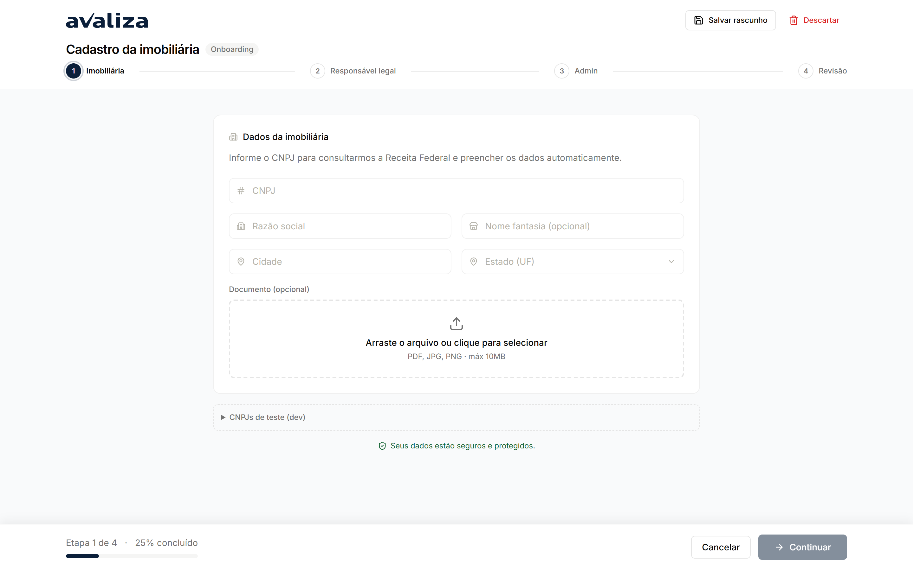

Entrar na rede · jornada independente
Onboarding da imobiliária
Dono do resultado: Comercial — Responsável Comercial
- Gatilho
- Parceiro ainda sem conta abre /onboarding (CNPJ, responsável, admin).
- Resultado
- Cadastro aprovado, rejeitado ou parado — o clique de aprovar é irreversível.
- Lifecycle
- Um cadastro = um ciclo. Não se mistura com proposta nem com CS.
- Atores na operação
- Parceiro ainda sem conta
portal - Analista comercial
comercial
- Parceiro ainda sem conta
- Dono (setor)
- Comercial
- Outros setores
- Customer Success
Entra de
Ponto de entrada. Ninguém neste grafo é obrigado a chegar aqui.
Sem linha do tempo forçada
Este ciclo não tem etapas ordenadas. A tela abaixo é evidência, não passo 1 de N.
Telas (evidência)
Superfícies atuais onde este ciclo aparece. Abrir a tela não significa avançar uma etapa.

/onboarding · evidência, não etapa
/onboarding-comercial · evidência, não etapaIsto não é esta jornada
- Não é jornada de CS — a sidebar de CS só observa a mesma fila.
- Portal Imobiliárias é placeholder; não há ficha de conta neste build.